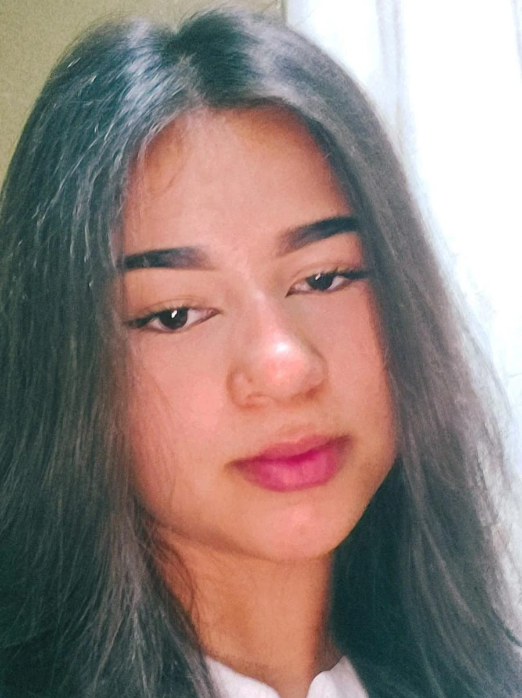

Anabella Reque
de Freitas, ficou responsável pela criação
do design e criatividade.
Maria Eduarda Teixeira, ficou responsável pela criação
do HTML e CSS.
Maria Eduarda Raissa Garcia, ficou responsável pela criação
do CSS e ajudou no design.

Sabrina Honorato, ficou responsável pela revisão do site e
criação do HTML